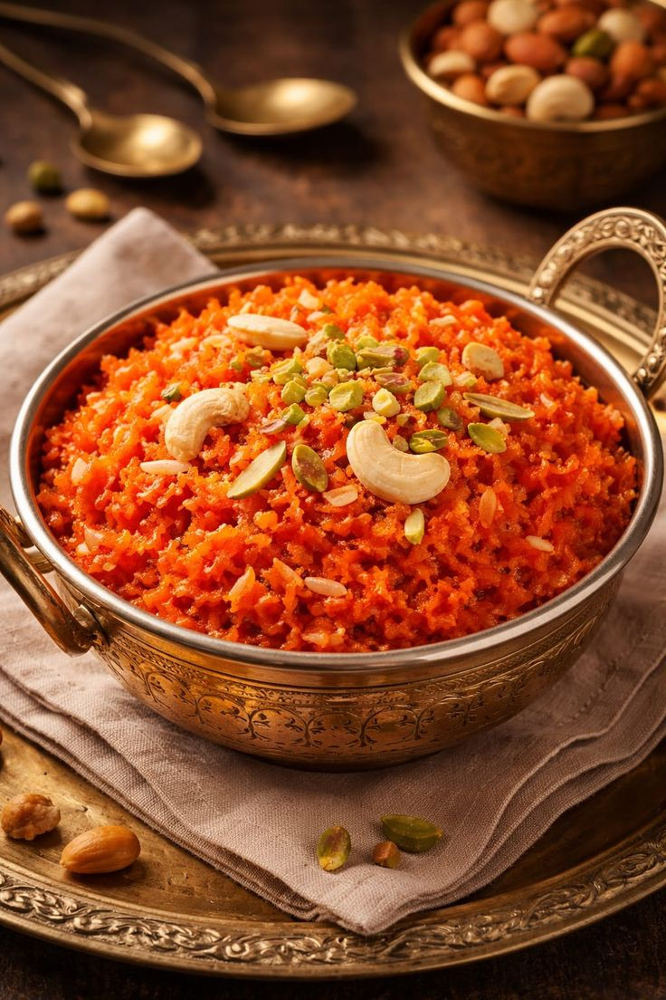

Home
Gajar ka Halwa/Carrot Halwa

Ingredients:
- 8 cup shredded carrots
- 8 cups whole milk
- 1 cup sugar
- 24 green cardamom pods or 1 teaspoon ground cardamom
- 6 tablespoons vegetable oil
- 1/4 cup slivered almonds, toasted
- 1/4 cup dry- roasted pistachio nuts
Procedure:
- Combine carrots, milk, and sugar in a 6- to 8-qt. Dutch oven; bring to a boil over high heat, stirring occasionally.
- Reduce heat to medium; cook, stirring occasionally, until liquid has evaporated, about 1 hour.
- Meanwhile, use a mortar and pestle or a rolling pin to break open cardamom pods. Coarsely crush seeds, discarding the shells. (If using ground cardamom, skip this step.)
- Heat oil in a very large skillet over medium-high heat. Cook half of cardamom until fragrant, about 30 seconds. Add carrot mixture and cook, stirring constantly, until thick and jammy, about 15 minutes. Remove from heat.
- Stir in remaining cardamom. Sprinkle with almonds and pistachios just before serving. (Chill in an airtight container up to 5 days; freeze up to 3 months.)